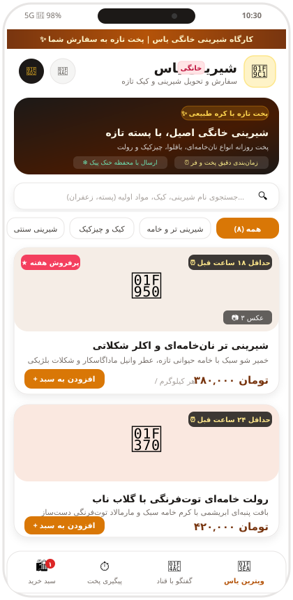
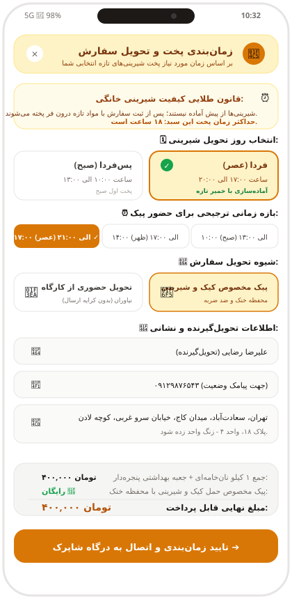
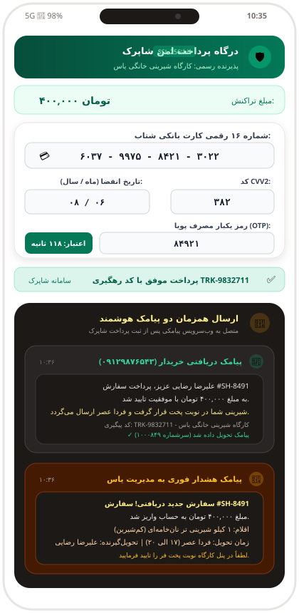
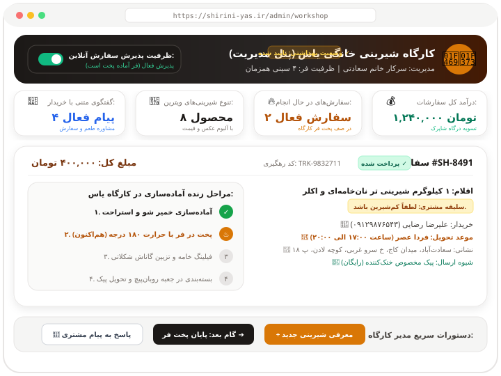

تصاویر بخشهای مختلف اپلیکیشن همراه با فایل طرحنامه رسمی جهت ارائه و تصمیمگیری نهایی
نمایش آلبوم تصاویر چندگانه، برچسب زمان پخت روزانه (مثلاً حداقل ۱۸ ساعت قبل)، قیمت هر کیلوگرم به تومان، ترکیبات سالم و امکان انتخاب وزن دلخواه.

محاسبه خودکار لیدتایم پخت، انتخاب بازه ساعتی دلخواه (صبح، ظهر، عصر) و انتخاب شیوه ارسال با خودرو مجهز به خنککننده یا تحویل حضوری.

اتصال شبیهساز امن شاپرک با رمز پویا (OTP) و ارسال همزمان پیامک تایید به خریدار و پیامک آلارم سفارش فوری به مدیر شیرینی یاس.

مشاهده سفارشهای فعال، تغییر گامبهگام مرحله پخت در فر، گزارش درآمد و کلید کنترل ظرفیت روزانه فر کارگاه.
